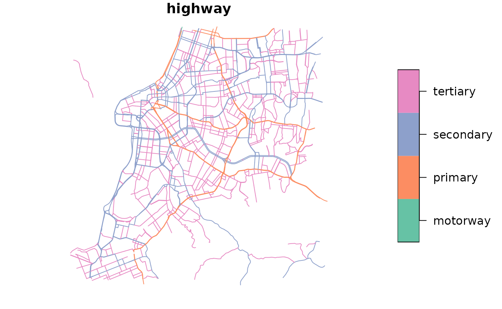

Building a custom network with modified OSM car speeds
2025-07-14
Source:vignettes/build_custom_network.Rmd
build_custom_network.RmdAbstract
This vignette shows how to build a custom transport network with modified OSM car speeds, which can be used to simulate different scenarios of traffic congestion and road closures.1. Introduction
By default, routing by car in R5 considers that vehicles
travel at the legal speed limit in each OSM road edge. This is commonly
referred to as a “free flow scenario”, without congestion. However, the
average speed of car trips is different (usually lower) than the legal
speed limit in most real case scenarios due to traffic conditions and
driving behavior.
This vignette shows how you can set custom speeds for cars by making
simple changes to OSM data with the convenient
build_custom_network() function. We’ll show how OSM speeds
can be changed using two different strategies: (1) by applying different
speed factors by road hierarchy, and (2) by changing the same speed
factor to all roads. A third scenario would be to change the speed of
only the roads within determined areas/polygons, but we’ll leave this
for a future occasion.
Basic usage
The build_custom_network() has a relatively similar
behavior to the r5r::build_network() function. It builds a
transport network that can be used in the routing and accessibility
function in r5r. The two key differences here are:
- The user needs to pass a directory path where the new transport
network is going to be saved. By default,
build_custom_network()builds the new network in a temporary directory, but users can point to a permanent directory using theoutput_dirparameter. - The user needs to point to pass to the
new_carspeedsparameter adata.framethat indicates the speed factor for each OSM edge id.
In this first example we’ll be using the a sample data set for the
city of Porto Alegre (Brazil) included in r5r. This sample
data path includes the file "poa_osm_congestion.csv", which
should have two columns: "osm_id" and
"max_speed". Like this:
# increase Java memory
options(java.parameters = "-Xmx2G")
# load libraries
library(r5r)
library(dplyr)
library(data.table)
library(ggplot2)
# data path where the .pbf file is located
data_path <- system.file("extdata/poa", package = "r5r")
# read data.frame with speed factors
speed_factors <- read.csv(
system.file("extdata/poa/poa_osm_congestion.csv", package = "r5r")
)
head(speed_factors)
#> osm_id max_speed
#> 1 27184648 0.5
#> 2 762361901 0.5
#> 3 568609955 0.5
#> 4 709834913 0.5
#> 5 709834914 0.5
#> 6 77705540 0.5In this example, the values of the "max_speed" column in
the speed_factors object are all set to 0.5.
Since we also set the parameter percentage_mode = TRUE,
this means that the driving speed of those OSM edges listed in the
data.frame will be at 50% of the original speed in the OSM
data. Mind you that the values in the "max_speed" column
also accept absolute values in Km/h, in which case you must use
percentage_mode = FALSE.
obs. by default, the speeds of all the OSM edges not listed in the
data.frame are kept unchanged. You can change the default
value, as we’ll see in the second example below.
r5r_network_congestion <- r5r::build_custom_network(
data_path = data_path,
new_carspeeds = speed_factors,
percentage_mode = TRUE,
verbose = FALSE
)And that’s it ! You can now use the new network
r5r_network_congestion in any of r5r’s routing
and accessibility functions, like this.
# load origin/destination points
points <- data.table::fread(file.path(data_path, "poa_points_of_interest.csv"))
ttm_congestion <- r5r::travel_time_matrix(
r5r_network_congestion,
origins = points,
destinations = points,
mode = 'car',
departure_datetime = Sys.time(),
max_trip_duration = 60
)Obs. Mind you however that, even though we have set the speed factors
to 0.5, travel times might not become twice as long. This
is because of how travel times by car are also affected by
intersections, and how changes in the road speeds might also affect the
route and hence the trip distance itself.
Now let’s dive into more realistic examples.
2. Setting different congestion levels by road hierarchy
In this example, we’ll set different speed factor for roads of different hierarchy levels. We can assume for example that congestion levels tend to be more intense in roads of higher hierarchy. We can do this in two simple steps.
First we need to do read the OSM data from our .pbf
file, and to filter the OSM edges with the road types we want.
# path to OSM pbf
pbf_path <- paste0(data_path, "/poa_osm.pbf")
# read layer of lines from pbf
roads <- sf::st_read(
pbf_path,
layer = 'lines',
quiet = TRUE
)
# Filter only road types of interest
rt <- c("motorway", "primary", "secondary", "tertiary")
roads <- roads |>
select(osm_id, highway) |>
filter(highway %in% rt)
head(roads)
#> Simple feature collection with 6 features and 2 fields
#> Geometry type: LINESTRING
#> Dimension: XY
#> Bounding box: xmin: -51.21315 ymin: -30.06624 xmax: -51.15025 ymax: -30.04939
#> Geodetic CRS: WGS 84
#> osm_id highway geometry
#> 1 26786712 primary LINESTRING (-51.15164 -30.0...
#> 2 26786730 primary LINESTRING (-51.17265 -30.0...
#> 3 26786732 primary LINESTRING (-51.15025 -30.0...
#> 4 26847798 primary LINESTRING (-51.21315 -30.0...
#> 5 26936215 primary LINESTRING (-51.20818 -30.0...
#> 6 26936224 primary LINESTRING (-51.20818 -30.0...Here’s how the road network looks like.
# map
plot(roads["highway"])
Now we only need to add a new column "max_speed" with
values conditioned on the road type, and make sure the
osm_id is of class numeric. The
data.frame looks like this:
new_speeds <- roads |>
mutate(
osm_id = as.numeric(osm_id),
max_speed = case_when(
highway == "motorway" ~ 0.75,
highway == "primary" ~ 0.8,
highway == "secondary" ~ 0.85,
highway == "tertiary" ~ 0.9)) |>
sf::st_drop_geometry()
head(new_speeds)
#> osm_id highway max_speed
#> 1 26786712 primary 0.8
#> 2 26786730 primary 0.8
#> 3 26786732 primary 0.8
#> 4 26847798 primary 0.8
#> 5 26936215 primary 0.8
#> 6 26936224 primary 0.8That’s it. Now we can pass the new_speeds data frame to
build_custom_network() along with the path to the directory
where the original OSM .pbf file is stored and the function
will build a new routable transport network with modified OSM car
speeds.
r5r_network_new_speeds <- r5r::build_custom_network(
data_path = data_path,
new_carspeeds = new_speeds,
output_path = tempdir(),
percentage_mode = TRUE,
verbose = FALSE
)3. Applying the same speed factor to all roads
The build_custom_network() function has a parameter
default_speed, which can be used to set the speed of all
the roads not listed in the new_carspeeds input. By
default, default_speed = NULL and the speeds of the
unlisted roads are kept unchanged.
In this example, we’ll use this parameter to apply the same speed
factor to all roads, to simulate as if the speed limits of all roads was
changed to 40 Km/h. To do this, we only need to create a
data.frame with a mock OSM id that that does not exist in
our OSM data and to pass default_speed = 40 with
percentage_mode = FALSE.
# create df with a road that does not exist.
mock_data <- data.frame(osm_id = 9999, max_speed = 9999)
# create a temp dir where the custom network will be saved
new_temp_dir <- fs::path_temp(tmpdir='./40kmph')
dir.create(new_temp_dir)
# build network with all roads at at 40 Km/h
r5r_network_20kmph <- r5r::build_custom_network(
data_path = data_path,
new_carspeeds = mock_data,
output_path = new_temp_dir,
default_speed = 40,
percentage_mode = FALSE
)4. Congestion level within a polygon
steps TODO:
- create a custom polygon, e.g. a circle over the city center
- determine OSM ids in the polygon using a spatial join operation
between the polygon and the
.pbf - create a csv file with custom speeds for OSM ids within the polygon
this can be computationally intensive due to the spatial join operation, depending on the size of the road network and the number of polygons. A new function under development will make this much easier / faster.
Extra tip:
-
Road closure: one can simulate a road closure by
setting the
"max_speed"value to0. This can be quite handy for studies that try to measure the resilience of transport systems to network disruptions.
Cleaning up after usage
r5r objects are still allocated to any amount of memory
previously set after they are done with their calculations. In order to
remove an existing r5r object and reallocate the memory it
had been using, we use the stop_r5 function followed by a
call to Java’s garbage collector, as follows:
If you have any suggestions or want to report an error, please visit the package GitHub page.